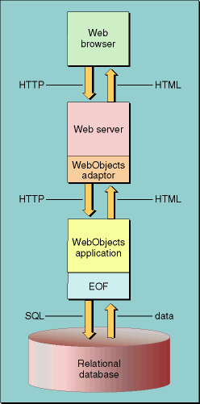

| PATH |

WebObjects solves many of the basic problems required for developing Web applications. Frequently, programmers reinvent the wheel to provide required features and capabilities to their applications, or invest a lot of work integrating partial solutions. WebObjects comes with much of the logic needed by a Web application, and provides an infrastructure that enables developers to work both effectively and efficiently.
Almost any service beyond providing access to organized, static data relies on a database. Hence, it is very important to make database access powerful and efficient, both in use and implementation. WebObjects relies on the Enterprise Objects layer, which represents your database using Java objects (enterprise objects) with custom behavior and validation rules.
Other solutions for database access rely on technology such as embedding database access code, like SQL (Structured Query Language), within the Web pages themselves, which makes modifying the application much more difficult.
The Enterprise Object technology handles the dirty work of database access tasks, like caching, fetching, saving, and relationship modeling, allowing you to concentrate on the implementation of your custom business logic. It even constructs the basic Java code required for your objects—you modify this code to add specialized logic, appropriate to your application. By providing this level of object abstraction, Enterprise Objects allows you to modify your database schema or even move to a totally different storage mechanism without any code modification.
WebObjects is scalable at several levels, from development to deployment.
At the development level, individual pages and components can be developed in a modular fashion and reused, because they are each individual Java objects or WebObjects components. Further, a project can be easily broken into frameworks and products to facilitate code sharing and multiple-developer organization.
The WebObjects system itself scales over a broad range of user load, without any developer intervention. When a new request is made to your application, a new session is created, which encapsulates the activity and changes of a particular user. Caches are maintained by the application as well as by each of its sessions (a session represents the activity of one user) to speed response generation and minimize database access. In addition, WebObjects automatically caches component definitions to minimize the need to read files from disk. For more detail on session and state management see "Using the Session to Manage State".
At deployment, WebObjects offers a linear scaling mechanism. The simplest deployment system is one computer running a Web server, WebObjects, and a database server. As your needs increase, the database server and Web server can be moved to other computers. Additional instances of your application can run in parallel and use the same database transparently. If demand increases further, additional application servers can be added using the same database and Web servers. WebObjects even automatically adds new application servers to its load balancing system to ensure the most efficient access possible. (See Deploying WebObjects Applications for more information on deployment.)
Experience has demonstrated that object orientation is a very useful paradigm for many development projects. WebObjects is designed on an object-oriented model, with every part of the system, from components to the process of generating pages itself, organized using an object model.
As a developer, you gain many benefits from this model. You can customize the process of page generation by adding your logic to standard methods, which are invoked at determined stages. This is possible because all WebObjects components inherit from the WOComponent class. A component is an object that encompasses the look and behavior of a Web page, or a portion of one.
Pages or components that share behavior—for example, a component that displays search results for each of the entities you have in your database—can gain the usual benefits of inheritance, saving you from writing duplicate code and all the attendant inefficiencies.
You are also freed from the need to conceive of your data as anything but first-class objects. Rather than thinking about tables, columns, and rows in a database when retrieving information or manipulating relationships, you manage data by creating objects or arrays of objects, and by invoking their methods. The Enterprise Object technology manipulates the database for you to reflect your changes.
The most basic websites are composed of static pages in HTML that are served to a user's browser. These pages change infrequently, and the scope of the changes is such that it is practical to manually update the documents on the rare occasion that they change.
Increasingly though, users need more dynamic or frequently updated content via the Web. Weather reports, news stories, and stock quotes change frequently, and it's impractical or impossible to alter static text documents on a Web server to reflect new information often enough to be useful. Instead, special software generates HTML (hypertext markup language) code on the fly. (The pages generated can include current information obtained from a data source, often a relational database.) This code is then sent to a user's Web browser. Figure 2-1 illustrates how requests by a Web browser are processed to generate a response page.
Figure 2-1 Dynamic page generation in WebObjects
Each page in a WebObjects application is created as a template. These templates can contain static text like a regular Web page, other templates in a recursive structure, or special WebObjects tags. These tags are similar to HTML tags, but are instead associated with a WebObjects element, whose attributes can be bound to methods or instance variables of your Java class. For more on components, elements, and attributes see "The Main Component".
When the template is requested, WebObjects fills in the missing data represented by the tags by calling the methods associated with the element's attributes and inserting the result into the returned HTML code on the fly. The called methods might access a database, perform calculations, or carry out any other custom logic you have defined.
Several other common idioms exist for dynamic page generation. These range from various third-party solutions to hand-rolled Perl or Java servlet systems. Few offer the easy database access, or close association with Java logic that WebObjects provides. Another problem common to most other solutions is a lack of scalability—page-based logic rapidly becomes impossible to maintain as the size of the site increases.
There is a qualitative change in the kind of services your application can offer to its users when it no longer relies solely on navigation for control. By allowing the users of your application to input data, you increase the application's scope dramatically beyond that of solely sharing already extant information. For example, you have to come up with logic that validates the data the user enters, so that your database does not become corrupted.
A few mechanisms for user input are in common use. Most involve encoding the data into a string that is attached to the URL (Uniform Resource Locator) of the page the user requests, and parsing it on the server end via a custom program written to use the CGI (Common Gateway Interface) protocol.
WebObjects instead follows the same paradigm used for dynamic
page generation. Standard HTML form elements can be associated with
variables and methods in your Java code and, when the user submits
a form, the methods indicated are called with the user-entered data
as an argument. Your methods can take any action you determine to record
this input—and if you associate a form element with a database
field via the enterprise object property representing it, user input
is recorded in the database automatically. (See WebObjects
Programming Topics in http://developer.apple.com/techpubs/webobjects/Topics/TopicsTOC.html for
more information on enterprise objects.)
One of the most pressing issues in Web application development is the need to come up with ways of maintaining state—information about the user's session, her interaction with the application during a given period—between requests. Because HTTP (Hypertext Transfer Protocol) is a stateless protocol, there is no connection maintained between the user's browser and the Web server. This leaves the responsibility for maintaining state up to you.
In a desktop application, the notion of state is implicit: there is only one user. In a Web application, however, there may be hundreds of simultaneous users.
There are two ways of maintaining state in a Web application: using cookies and customizing URLs.
When cookies are used, information is stored on a Web browser (the client) by the Web server. When the server needs to determine the current state of a client, it retrieves the cookie. The drawback of this approach is that Web browsers can be configured to refuse cookies. In such cases, the application's functionality can be severely limited.
To ensure that state can be maintained, whether cookies are enabled or not on the client, many Web applications use customized URLs, in which they add the kind of information that would otherwise be stored on a cookie.
WebObjects can maintain state using either of these approaches. However, you don't have to worry about which one is actually used. All you do is store the required state information in an instance of the Session class. When a request is processed, WebObjects automatically activates the Session instance associated with the user who initiated the request (the fact that such information was retrieved from a cookie or from the URL is transparent to you). See "Using the Session to Manage State" for more information.
© 2001 Apple Computer, Inc.